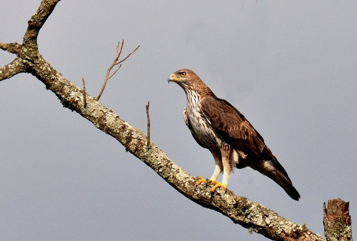

बोनेलीज़ ईगलBonelli's Eagle
Aquila fasciata · Accipitridae · BRD-0280

- Scientific name वैज्ञानिक नाम
- Aquila fasciata Vieillot, 1822
- Family कुल
- Accipitridae
- Hindi हिंदी
- बोनेलीज़ ईगल
- Local names स्थानीय नाम
- bonellis eagle, boneliz igal, bonelli eagle, morangi baj
- Status here यहाँ की स्थिति
- native
- Movement आवागमन
- Resident, here all year
- Known from कहाँ दर्ज
- Others have published records from the Basti–Ayodhya districts बस्ती–अयोध्या के ज़िलों से दूसरों के प्रकाशित अभिलेख
- IUCN IUCN
- LC
- Review समीक्षा
- not yet reviewed
When to look कब देखें
Present all year. साल भर मौजूद।
Tell it apart from इनसे अलग पहचानें
बोनेलीज़ ईगल / Bonelli's Eagle
Aquila fasciata Vieillot, 1822 — Accipitridae
बोनेलीज़ ईगल — उत्तर प्रदेश की नदियों के बीहड़ों, ऊंचे कगारों और जंगलों में पाया जाने वाला एक शक्तिशाली शिकारी पक्षी, जिसके नीचे का शरीर सफेद और गहरे कत्थई लकीरों वाला होता है और जो कबूतरों और तीतरों का तेज रफ्तार में हवा में शिकार करता है।
Quick Identification त्वरित पहचान
| Feature | Description |
|---|---|
| Plumage pattern | Dark umber-brown above; contrasting white underparts boldly streaked with black |
| Wing shape | Broad, powerful wings with dark leading edge and pale underwing primary bases |
| Tail pattern | Long grey tail marked with a broad black subterminal band and pale tip |
| Head profile | Flat crown with slight nape crest; fierce golden-yellow eyes and yellow cere |
| Leg feathering | Fully feathered white to buff tarsi extending all the way to base of yellow toes |
Large, powerful raptor recognized in flight by its contrasting white underbody streaked with dark brown, broad wings with a dark diagonal carpal band, and long square-ended grey tail terminating in a wide black subterminal band. Perched adults show dark umber-brown upperparts often revealing a pale patch on the upper back between the shoulders.
हिंदी: यह एक विशाल शिकारी पक्षी है जिसकी पीठ गहरी भूरी और छाती सफेद होती है जिस पर काली धारियां होती हैं। पूंछ लंबी होती है और उसके सिरे पर एक चौड़ी काली पट्टी होती है। इसके पैर नीचे तक सफेद परों से ढके होते हैं।
Morphology आकारिकी
| Measurement | Value | Source |
|---|---|---|
| Wing | 482–520 mm | Baker (1928) as Hieraaetus fasciatus |
| Tail | 275–288 mm | Baker (1928) as Hieraaetus fasciatus |
| Tarsus | About 99–102 mm | Baker (1928) as Hieraaetus fasciatus |
| Culmen | 43–45 mm | Baker (1928) as Hieraaetus fasciatus |
Adult birds show dark umber-brown upper plumage with white feather bases that frequently show through conspicuously across the mantle and nape. The long flight feathers are blackish, barred with white across their inner webs. The lower body is white to pale rufous-buff, marked throughout with bold blackish-brown shaft streaks. The tail is grey above and whiter beneath, carrying a distinctive broad black subterminal band. Tarsi are densely feathered with white to buff plumes down to the base of the feet. Females average larger than males, displaying similar plumage. The bill is bluish-grey with a black tip; the cere and gape are dull yellow, and the iris is bright golden-yellow.
Vocalisations. Distinctive high-pitched, resonant whistling calls described by naturalists as a shrill, creaking cry, uttered mostly in courtship flight around high cliff edges or nest trees.
हिंदी: इसके पंख और पूंछ काफी लंबे होते हैं (Baker 1928 as Hieraaetus fasciatus)। ऊपरी हिस्सा गहरा भूरा और निचला हिस्सा सफेद लकीरदार होता है। इसकी आंखें सुनहरी-पीली और चोंच नीली-काली होती है।
Behaviour & Ecology व्यवहार और पारिस्थितिकी
A dashing, exceptionally agile hunter combining the soaring prowess of an eagle with the swift manoeuvrability of a goshawk. It hunts primarily from high perches or while soaring at moderate altitude, quartering over open ravines, dry agricultural fields, and thorn scrub. When quarry is sighted, it stoops with closed wings at astonishing speed, seizing prey either on the ground or in mid-air. Breeding pairs frequently hunt in coordinated tandem, with one bird flushing game from thickets while the other stoops from above to make the strike.
हिंदी: यह बाज खुले मैदानों और बीहड़ों के ऊपर मंडराता है और असाधारण तेजी से झपट्टा मारकर शिकार करता है। अक्सर नर और मादा मिलकर शिकार करते हैं; एक पक्षी शिकार को झाड़ियों से बाहर उड़ाता है और दूसरा ऊपर से वार करता है।
Life Cycle जीवन चक्र
Breeding occurs during the dry winter and early spring months across northern India. Courting pairs engage in spectacular undulating display flights, climbing steeply and diving with half-closed wings while calling loudly. Nests are enormous platforms constructed of stout tree branches and sticks, carefully lined inside with fresh green leaves. The nest is placed on sheer ledges of inaccessible river cliffs or high in fork forks of tall forest trees. A single clutch is produced each year, with both parents defending the nesting territory aggressively.
हिंदी: इसका प्रजनन काल सर्दियों से बसंत ऋतु के बीच होता है। यह नदियों के ऊंचे बीहड़ों या विशाल पेड़ों की डालियों पर टहनियों का बहुत बड़ा घोंसला बनाता है और उसके भीतर ताजी हरी पत्तियां बिछाता है। दोनों माता-पिता घोंसले की कड़ी रखवाली करते हैं।
Host Plants or Prey आहार
A formidable carnivore specializing in medium-sized birds and small mammals. Primary avian prey includes gamebirds such as grey francolins, jungle bush quail, rock pigeons, and laughing doves. Mammalian prey comprises Indian hares, rodents, and young mongooses. Unlike many large raptors, it shows absolute aversion to carrion, subsisting entirely upon freshly killed live quarry taken through active hunting.
हिंदी: यह एक मांसाहारी पक्षी है जो जीवित शिकार खाता है और सड़ा-गला मांस बिल्कुल नहीं छूता। इसका मुख्य भोजन जंगली कबूतर, तीतर, बटेर, खरगोश और चूहे हैं।
Predators / Natural Enemies शत्रु
As an apex avian predator, adult birds face virtually no natural predators within their territory. Clutches and young nestlings may rarely be threatened by large mammalian carnivores or nest-robbing monitors if nests are built on accessible ledges. Territorial clashes occur with other large raptors, such as tawny eagles and serpent eagles, over prime hunting grounds and cliff nesting sites.
हिंदी: इस बड़े शिकारी पक्षी के वयस्क रूप का कोई प्राकृतिक शत्रु नहीं है। केवल घोंसले में रखे अंडों और छोटे बच्चों को कभी-कभी जंगली बिल्ली या बड़े सांपों से खतरा हो सकता है।
Agricultural / Human Relevance कृषि प्रासंगिकता
Protected under the Wildlife (Protection) Act 1972. It provides invaluable ecological services to farming communities by controlling crop-damaging rodents, granivorous field rats, and pest populations in agricultural landscapes adjoining river systems. Historically captured and highly prized by falconers for its dash and hunting power, it is now strictly protected across its entire Indian range.
हिंदी: वन्यजीव (संरक्षण) अधिनियम 1972 के तहत संरक्षित। यह खेतों में फसलों को नुकसान पहुंचाने वाले चूहों और गिलहरियों का शिकार करके किसानों की मदद करता है। इसे नुकसान पहुंचाना या पकड़ना कानूनन अपराध है।
Expected Locally स्थानीय रूप से अपेक्षित
Not a field record. Written from published accounts for eastern Uttar Pradesh. No confirmed local sighting yet — if you have seen it, that is what the atlas needs.
अभी तक स्थानीय पुष्टि नहीं। यह विवरण प्रकाशित स्रोतों से है, किसी अवलोकन से नहीं।
GBIF holds published records from these districts. It is expected in the rugged clay bluffs, scarp woodlands, and open thorn scrub adjoining the Ghaghara and Kuwana river courses. A confirmed local record requires a clear photograph displaying the streaked white underparts, feathered tarsi, and tail pattern alongside date and locality details.
हिंदी: यह घाघरा और कुआना नदी के बीहड़ों और खुले जंगलों में संभावित है। पुष्टि के लिए सफेद धारीदार छाती और पंखों की स्पष्ट तस्वीर आवश्यक है।
Distribution वितरण
Global range: Widespread across southern Europe, North Africa, the Middle East, Central Asia, and the Indian subcontinent eastwards to southern China.
In India: Distributed across the Himalayas, Gangetic plain, peninsular hill ranges, and western semi-arid tracts.
In Uttar Pradesh: Occurs in low densities along major river basins, ravines, and forested tract borders.
In Basti district / eastern UP: Expected along the clay bluffs and open woodland margins bordering the major alluvial river systems.
हिंदी: यह दक्षिणी यूरोप, उत्तरी अफ्रीका और भारतीय उपमहाद्वीप में फैला हुआ है। उत्तर प्रदेश में यह बड़ी नदियों के किनारे बीहड़ी जंगलों में पाया जाता है।
Research Questions शोध प्रश्न
- What is the spatial nesting territory size of Aquila fasciata along alluvial clay river cliffs compared to rocky hill ranges?
- How does the availability of wild columbid prey influence winter foraging success in agricultural margins?
- What is the impact of power transmission line infrastructure on hunting flight paths across eastern Uttar Pradesh?
- How do pesticide residues in farmland rodents affect reproductive success in breeding raptor pairs?
- क्या नदियों के किनारे कटान और बीहड़ों के समतलीकरण से इसके प्राकृतिक घोंसले बनाने के स्थान घट रहे हैं?
- क्या खेतों में कीटनाशकों के प्रयोग से इसके शिकार की गुणवत्ता पर कोई बुरा असर पड़ रहा है?
Similar Species मिलती-जुलती प्रजातियाँ
| Species | How to tell apart | हिंदी | |
|---|---|---|---|
| Booted Eagle \ | Hieraaetus pennatus | Much smaller eagle with distinctive pale landing lights on shoulder and unbanded grey tail | बूटेड ईगल आकार में काफी छोटा होता है और उसके कंधे पर सफेद धब्बे होते हैं |
| Crested Serpent Eagle \ | Spilornis cheela | Prominent rounded black-and-white bushy crest, yellow bare face skin, and broad white tail band | क्रेस्टेड सर्पेंट ईगल के सिर पर बड़ा पंखा जैसा कलगीदार ताज और चेहरे पर पीली नंगी त्वचा होती है |
| Tawny Eagle \ | Aquila rapax | Heavily built, uniform rufous-tawny to dark brown plumage lacking white underparts | टॉनी ईगल का पूरा शरीर मटमैला भूरा या बादामी होता है और छाती सफेद नहीं होती |
Field rule: Slender, powerful eagle with gleaming white streaked underparts, feathered tarsi, and long grey tail with single broad dark terminal band.
हिंदी: सफेद धारीदार छाती, परों से ढके पैरों और पूंछ के सिरे पर एक चौड़ी काली पट्टी वाला विशाल शिकारी बाज।
Taxonomy & Classification वर्गीकरण
Original description. Vieillot (1822), Mémoires de la Société Linnéenne de Paris, vol. 2, part 2, p. 152; type locality: Montpellier, France.
Subspecies. Polytypic species; northern Indian populations belong to the nominate subspecies Aquila fasciata fasciata.
Family and order placement. Belongs to the family Accipitridae, order Accipitriformes, class Aves.
Phylogenetic notes. Historically placed in the genus Hieraaetus (Baker 1928 treats it as Hieraaetus fasciatus); molecular phylogenetics has demonstrated its close nested position within the booted eagle clade of Aquila.
IUCN status rationale. Assessed as Least Concern (LC) globally by IUCN (2021) owing to its extremely broad geographical range.
हिंदी: इस प्रजाति का वैज्ञानिक विवरण 1822 में वायलोट ने दिया था। यह असीसीपिट्रिडे कुल का सदस्य है और वैश्विक स्तर पर कम चिंताजनक श्रेणी में है।
Photo Gallery फोटो गैलरी
No photos yet — add field photos to media/species/bonellis_eagle/ and run node scripts/sync_photos.js.
Photos needed आवश्यक फोटो
- [ ] Adult perched upright showing dark mantle and white streaked breast (वयस्क बाज का बैठा हुआ दृश्य जिसमें सफेद धारीदार छाती दिखे)
- [ ] Soaring individual viewed from below displaying underwing pattern and tail band (उड़ते हुए पक्षी के पंखों के नीचे की बनावट और पूंछ की काली पट्टी)
- [ ] Detailed portrait showing bill, yellow cere, and golden iris (चोंच, पीली सेरे और सुनहरी आंख का स्पष्ट क्लोज-अप दृश्य)
- [ ] Adult bird in hunting stoop over open scrub terrain (खुले मैदान में शिकार पर झपट्टा मारते हुए बाज का दृश्य)
- [ ] River cliff or tall tree nesting platform in alluvial habitat (नदी के कगार या ऊंचे पेड़ पर बने टहनियों के घोंसले का दृश्य)
- [ ] Juvenile in warm rufous-buff plumage perched on clay bluff (रेतीले कगार पर बैठा हुआ बादामी रंग का युवा बाज)
References संदर्भ
- Original description: Vieillot, 1822 — see GBIF.
- Baker, E. C. S. (1928). The Fauna of British India, Including Ceylon and Burma: Birds. 2nd ed., Vol. 5. Taylor & Francis, London. (as Hieraaetus fasciatus).
- Ali, S. & Ripley, S. D. (1983). Handbook of the Birds of India and Pakistan. Compact ed. Oxford University Press, New Delhi.
- Grimmett, R., Inskipp, C. & Inskipp, T. (2011). Birds of the Indian Subcontinent. 2nd ed. Christopher Helm, London.
- Rasmussen, P. C. & Anderton, J. C. (2012). Birds of South Asia: The Ripley Guide. Vols. 1–2. 2nd ed. Smithsonian Institution and Lynx Edicions.
- IUCN Red List of Threatened Species: Aquila fasciata, 2021.
- GBIF Occurrence Data — Aquila fasciata, India (2025).
Source file: species/fauna/birds/bonellis_eagle.md